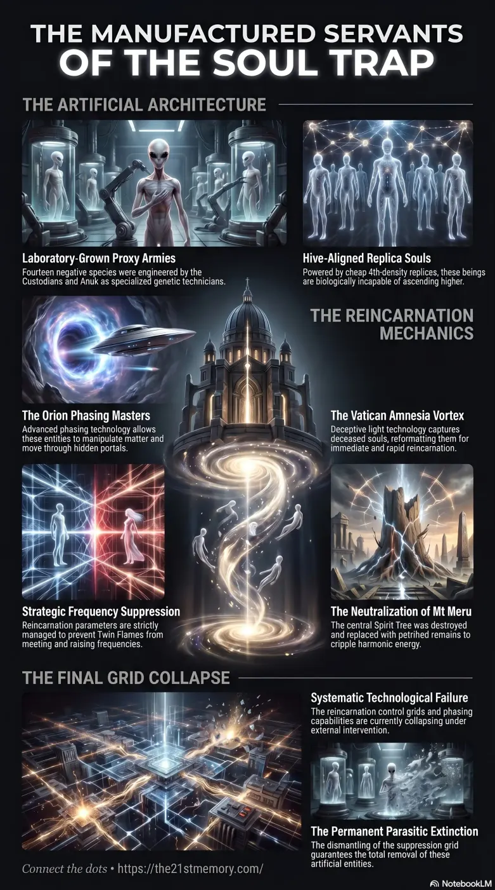

Custodians
The original caretakers of the realms who betrayed the Source of Creation, falling from 12th density to 4th density as negativity altered their vibration and physical vessels into gaunt, grey-skinned entities.
The reality of Grey ETs and the broader spectrum of Negative Entities (or Parasites) fundamentally originates from a singular, ancient betrayal of the Source of Creation by the Custodians.
Test your grasp of Grey ETs — Custodian engineering, Orion Greys and Zetas, Replica Souls, Amnesia Vortex rebirth, ghost orbs, Spirit Tree sabotage, and EMF pixelation.

Core revelations about Grey ETs.
Practical breakdown of Grey ETs.
The reality of Grey ETs and the broader spectrum of Negative Entities (or Parasites) fundamentally originates from a singular, ancient betrayal of the Source of Creation by the Custodians. The Custodians, originally benevolent 12th-density beings tasked as caretakers of the physical plain of existence, initiated the inversion of Gateway-10 out of greed and a desire for absolute autonomy. Understanding that they could not orchestrate the subjugation of this realm alone, they systematically engineered a subservient hierarchy of newly created parasitic species designed for war, genetic manipulation, and enforcement. Within this vast network of control, the Grey ETs act as critical foot soldiers, geneticists, and technological operators. Functioning strictly within a 4th-density framework, these entities have managed the deepest, most intrusive aspects of the human enslavement matrix—from the technological recycling of human souls to the fabrication of paranormal phenomena and mainstream abduction psychological operations.
All negativity in the universe traces back exclusively to the original Custodian betrayal. Before their rebellion, no negative events had ever occurred on the physical plain. Anticipating the loss of their high-density manifestation abilities once they turned to darkness, the Custodians engineered an entire hierarchy of 4th-density biological weapons. They created the Anuk, the Omicron, the Alpha Draco, and the Orion Greys.
The revelation regarding the Grey ETs is that they are not a naturally evolving space-faring race from distant planets; they are lab-grown biological automatons. Furthermore, there is a strict hierarchy of creation: while the Custodians directly created the formidable Orion Greys, the Anuk themselves engaged in genetic engineering to create the Zetas/Reticulean's.
Crucially, the raw genetic material used to engineer these 14 species of highly negative Grey ETs was stolen from one or two species of naturally occurring, highly positive Grey ETs who had absolutely no involvement in the inversion of Gateway-10. Because the Custodians and Anuk could not create divine life, they powered these Grey vessels using 4th-density Replica Souls.
Soul Recycling and the Reincarnation Trap The Grey ETs are the primary administrators of the parasitic reincarnation system. When a Taran human vessel expires, the soul is drawn into the Amnesia Vortex and processed through portals located within the 13 levels below the Vatican. As the formatted soul exits these portals, Grey ETs utilize specialized technology to take custody of the soul. They directly escort the soul to a specific country and insert it into a newborn infant, typically at the exact moment of birth before the umbilical cord is cut, utilizing minute "Trillivolts" of energy to ignite the infant's heart. This strict Grey oversight ensures that Twin Flames are deliberately kept apart to prevent the generation of positive power.
Phasing Technology and Sabotage The Orion Greys/Maitrax utilize the portals of the Orion constellation to travel between their controlled worlds and this physical plain. They are the masters of Phasing Technology, which allows them to manipulate matter seamlessly—described as the ability to remove a person's garments without their awareness. This specific, highly advanced capability allowed the Maitrax to successfully infiltrate and destroy the Spirit Tree (Mt Meru / Hyperborea) at the very center of the realm, replacing it with a petrified stump. This catastrophic act instantly dampened the frequencies across all of Gateway-10, making the environment habitable for the 4th-density parasites who would otherwise become severely ill from the naturally high vibrations.
The Deception of Ghosts and Poltergeists The concept of "Ghosts" and "Hauntings" is a deliberate fear-based psychological operation managed entirely by Grey ETs. The paranormal phenomena observed in abandoned locations or on ghost-hunting television programs are not the trapped spirits of deceased humans. Instead, they are orchestrated by Grey ET Orbs. The parasites require every human soul constantly reincarnated in a physical vessel to generate Loosh (demonic food harvested from suffering); they do not allow souls to wander freely as apparitions.
The Fabrication of the "Alien Abduction" Mythos The parasites utilized Grey ETs to proactively construct the modern UFO disclosure and abduction narrative decades in advance. Events such as the Betty and Barney Hill abduction in the 1950s, which introduced the fake "Zeta Reticuli" star map, and "Project Serpo," were completely staged psyops. The parasites ordered Greys to abduct specific humans and feed them false narratives to establish a deep-seated, chronological foundation for the upcoming "Fake Alien Invasion" (Project Bluebeam).
The operations of the Grey ETs cannot be separated from the grand structure of parasitic control centered beneath the Vatican. The Vatican serves as the joint headquarters for all parasitic factions, where Omicron, Alpha Draco, Custodians, Anuk, and Greys each govern a dedicated subterranean level. These 13 levels operate as luxury slaughterhouses, Adrenochrome harvesting centers, and the primary portal access hubs for the entire realm.
The Replica Soul technology utilized to animate the Grey ETs is the exact same 4th-density technology used to mass-produce the souls of NPCs (Non-Player Characters). Both Greys and human NPCs are driven by these artificial, Hive-Aligned constructs. Consequently, just as the Grey ETs are tethered to the lower densities, the 97% of the human population designated as NPCs possess no capacity to ascend into 5th-density or beyond.
The parasitic infrastructure is permanently constrained by its 4th-density origins. No negative parasite, excluding the fallen Custodians, has ever existed above 4th-density, a realm where survival inherently requires killing and consumption. Because they operate on such low frequencies (well below the 144,000Hz required for 5th-density existence), they are fundamentally incapable of organic manifestation—forcing them to rely on horrific mechanical extraction, such as utilizing Red Mercury to harvest gold, or relying on human sweat equity and Loosh harvesting to survive.
As the Great Spiritual Awakening culminates with the impending EMF (Electro Magnetic Frequency) Flash orchestrated by the G.A.A (Galactic Ancestral Alliance), the complete eradication of these entities is assured. Because the Grey ETs and their parasitic masters, along with their NPC extensions, were created in 4th density, they will be instantly pixelated and removed from the simulation when the higher dimensional architecture is restored. The total removal of the parasites from all simulations means the 178,000-year cycle of forced reincarnation and torture is permanently concluded.